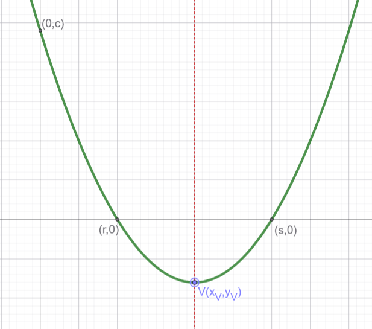

Repasa la teoría de la función cuadrática
Modelos de la Función Cuadrática
La función cuadrática se puede expresar de tres formas o modelos equivalentes. El parámetro \(a\) determina la apertura de la parábola y su orientación: si \(a > 0\) abre hacia arriba (cóncava) y si \(a < 0\) abre hacia abajo (convexa).
| Característica | Modelo Explícito | Modelo Canónico | Modelo Factorizado |
|---|---|---|---|
| Expresión | \( f(x) = ax^2 + bx + c \) | \( f(x) = a(x - x_v)^2 + y_v \) | \( f(x) = a(x - r)(x - s) \) |
| Cuándo usarlo | Cuando no podemos usar los otros modelos | Cuando conocemos el vértice \(V(x_v, y_v)\) y otro punto de la curva. | Cuando conocemos las raíces reales \(r\) y \(s\) (cortes con los ejes) y otro punto. |
| Vértice \(V(x_v, y_v)\) | \( x_v = -\frac{b}{2a} \) \( y_v = f(x_v) \) |
Directo: \( V(x_v, y_v) \) |
\( x_v = \frac{r + s}{2} \) ¡Punto medio! \( y_v = f(x_v) \) |
| Eje de simetría | \( x = -\frac{b}{2a} \) | \( x = x_v \) | \( x = \frac{r + s}{2} \) |
| Cortes con Eje X (Raíces) |
\( x = \frac{-b \pm \sqrt{b^2 - 4ac}}{2a} \) Es decir, resolvemos la ecuación cuadrática |
Resolvemos directamente sin desarrollar la ecuación cuadrática \(f(x)=0\) |
Directo: \( (r, 0) \) y \( (s, 0) \) |
| Corte con Eje Y | Directo: \( (0, c) \) |
Evaluar en \(x=0\): \( (0, f(0) ) \) |
Evaluar en \(x=0\): \( (0, f(0) )\) |

Practica la representación de parábolas
Representación de Parábolas
Para representar cada una de las siguientes parábolas, calcula previamente: el vértice \(V(x_v, y_v)\), el eje de simetría y los puntos de corte con los ejes.
- Modelo Explícito: Dada la función \(f(x) = x^2 - 4x + 3\)
- a) Determina si la parábola se abre hacia arriba o hacia abajo.
- b) Calcula las coordenadas del vértice \(V(x_v, y_v)\).
- c) Halla los puntos de corte con los ejes \(X\) e \(Y\).
- d) Representa gráficamente la función.
- Modelo Canónico: Dada la función \(g(x) = -(x - 2)^2 + 4\)
- a) Identifica directamente las coordenadas del vértice \(V\).
- b) Calcula los cortes con el eje \(X\) despejando directamente (sin desarrollar la expresión).
- c) Encuentra el punto de corte con el eje \(Y\).
- d) Representa gráficamente la función.
- Modelo Factorizado: Dada la función \(h(x) = 2(x + 1)(x - 3)\)
- a) Obtén de forma directa las raíces (cortes con el eje \(X\)).
- b) Calcula la abscisa del vértice \(x_v\) como el punto medio entre las raíces y halla \(y_v\).
- c) Calcula el corte con el eje \(Y\).
- d) Representa gráficamente la función.
Ecuación de la Parábola desde su Gráfica
Analiza los datos geométricos proporcionados en cada caso y determina la ecuación de la parábola eligiendo el modelo más conveniente.
- A partir del Vértice: Una parábola tiene su vértice en \(V(3, -2)\) y pasa por el punto \(A(1, 6)\).
- a) Elige el modelo más conveniente y plantea su expresión inicial.
- b) Sustituye el punto \(A\) para determinar el valor del parámetro \(a\).
- c) Escribe la ecuación final en forma canónica y en forma explícita.
- A partir de los Cortes con el Eje X: Una parábola corta al eje \(X\) en los puntos \(r = -2\) y \(s = 4\), y corta al eje \(Y\) en el punto \((0, -8)\).
- a) Plantea la ecuación utilizando el modelo factorizado.
- b) Determina el valor del coeficiente principal \(a\).
- c) Escribe la ecuación en forma factorizada y desarróllala a forma explícita.
- Reto de Análisis: Una función cuadrática tiene las siguientes características:
- Su eje de simetría es la recta \(x = -1\).
- Su valor máximo es \(y = 5\).
- Pasa por el origen de coordenadas \((0, 0)\).
- a) Determina la ecuación de la parábola.
- b) Calcula el otro punto de corte con el eje \(X\) utilizando la propiedad de simetría.